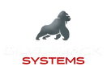
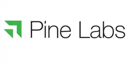
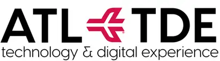
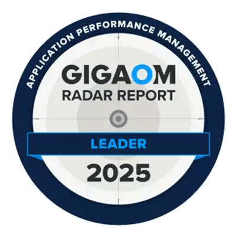
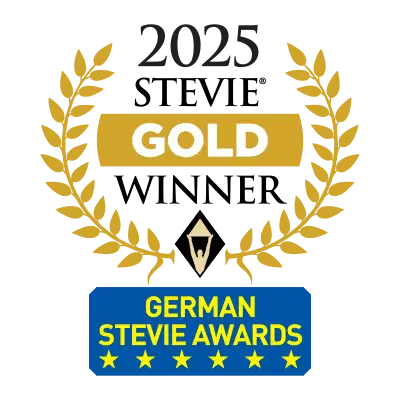
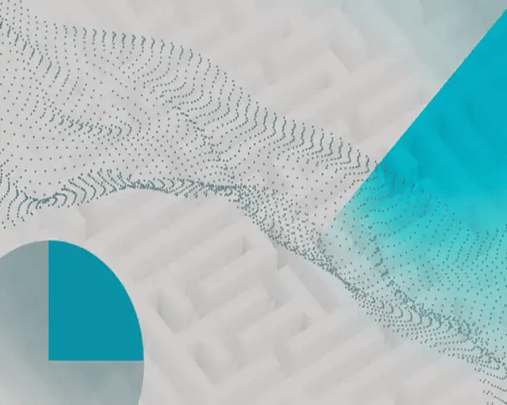
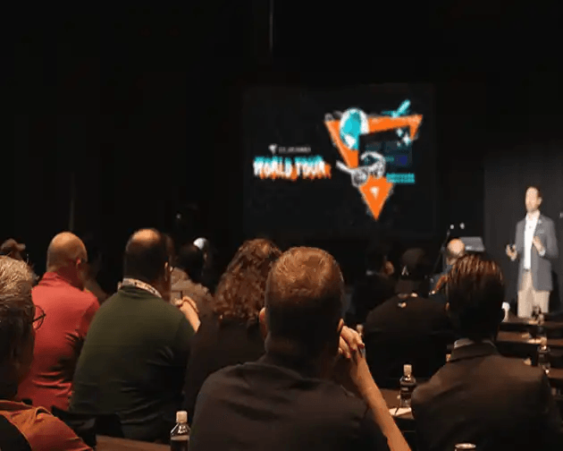

Don't let technology performance be the barrier to your success. Get better results across your networks, on-prem and cloud infrastructure, applications, databases, user experience, security, and more. Address security, compliance, and operational needs with flexible self-hosted and SaaS deployment options. Be more proactive, make more intelligent decisions, and accelerate issue resolution with AIOps-powered capabilities.
Explore Monitoring and Observability
Keep an eye on, troubleshoot, and fine-tune your databases with total control—anytime, anywhere. We combine deep diagnostics and powerful optimization so you can command your critical databases with ease. Actionable insights quickly identify issues and boost performance across on-premises, cloud, and hybrid environments. With flexible self-hosted or SaaS options, SolarWinds ensures optimal database management for peak performance and seamless operations.
Ensuring the reliability of your most critical systems requires focus, standardized workflows, collaboration, and unified insights to keep systems online. Incident response helps teams respond faster through event correlation, on-call management, and intelligent routing to connect the right people at the right time. Squadcast by SolarWinds helps teams drive operational resilience.
SolarWinds ITSM brings together everything you need—service management, asset management, CMDB, reporting, and more—with powerful enterprise service management features to help your teams solve problems quickly and effectively. AI-driven automation streamlines workflows and enhances agent accuracy and efficiency, making it your perfect choice for easy-to-use ITSM software built to scale effortlessly, keep employees happy, and ensure operations run smoothly.
Take a closer look at our agentic AI designed with safety, transparency, and human partnership at the core.
Learn about our latest AI capabilities and access new resources to improve your IT operations.
Develop your AI strategy with helpful resources, including blogs and e-books.
“SolarWinds was the right choice for Corevist for the simple reason that they ‘get it.’ Not only did they have the right tools, knowledge, and expertise, but they listened. They evolved and grew with us.”

“We evaluated a handful of popular products, but in the end chose SolarWinds because of its ease of initial setup and discovery, and the broad support it offers, across many leading vendors. Cleaner, clearer, simple!”

“The complete comprehensive infra monitoring with enterprise-grade observability suite, the capability SolarWinds has, I don't think some other vendors will have those capabilities.”

“SolarWinds is the right choice for our business because it provides a unified, high-visibility platform that supports both current operations and future development. Its ability to scale with our environment while offering valuable insights for stakeholders, partners, and leadership makes it an essential tool in our ecosystem.”
84% of Fortune 500® companies use SolarWinds — 20 Awards received in 2025 — 300K+ SolarWinds customers worldwide



OVERVIEW

REPORT
